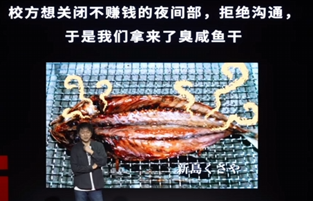

大笨蛋世界¶
多亏了就业难，我没有进入一家无聊的公司成为一个无聊的人
想法
虽然感觉自己这辈子很难实现这样随意的生活，但知道生活还有这么有意思的可能性，嗯，也很不错，而且，万一将来有一天厌倦了，我是说万一，我应该记得还有这样一些有意思的路可以走
基本信息¶
讲座链接 2025.04.12
松本哉：[素人之乱]5号店店主
类型：生活态度, 就业冰河期世代 , 失落的一代
讲稿¶
说明：整个演讲没什么大道理，都是亲身经历和感受，故事很连贯，所以我决定记录全文讲稿而不是部分摘录
你好你好！
现在日本东京的樱花很漂亮，所以我来中国之前的前几天，每天去公园看樱花，还有跟朋友一起喝酒到早上，所以我现在有一点感冒，不好意思。
我是松本哉，你好！我的中文不太好，所以今天我讲日文，不好意思。
(以下为日文演讲的中文翻译)
那个，我在东京一个叫高圆寺的街区，经营着一家二手商店、一家青旅和一家酒馆，这些店呢，几乎不赚钱，我就一边玩，一边随性地生活，大概是这样，所以我今天，想和大家聊聊，我为什么要做这些莫名其妙的事情。
最初的契机是我上大学的时候，我上的是东京的法政大学，这是一所特别疯狂的大学，有很多奇怪的人，晚上是24小时开放的，晚上经常有人在校园里喝酒聚会，乐队会突然就开始live，学生运动也很盛行，经常会有游行，甚至和大学发生冲突，总之，那是一个有很多不可思议的人的地方。
我生长在东京东部的下町地区，那里真的很像农村，只有老人和孩子，大家成年后就会马上开始工作，从农村一样的地方进了大学，第一次接触到这种反主流文化，对我冲击很大，法政大学是一个相当混乱的大学。
但有一天，学校突然有了一个校园再开发的计划，这个计划是把校园里的建筑全部重建，让校园变得非常漂亮，虽然会变漂亮，但同时学生的自由也会完全消失，还会增加很多规则，这个也禁止，那个也禁止，晚上也不让进，是这种再开发计划，如果大学变成那样，就太无聊了，我也很反感，当时有很多反对运动，我也参加了，那是我第一次参加社会运动，当时的学运真的很严肃，义愤填膺的感觉。
不过我总觉得那不太适合我，我还是更喜欢比较捣蛋的方式，于是，我成立了一个完全捣蛋的团体，叫“守护法政大学贫穷风气协会”，这个团体的核心就是在校园里赖着不走，一直待在学校，为啥呢，因为大学的这个改革就是想要让学生上完课就走，上课，然后就业，把大学变成一个为了就业的预备学校，开什么玩笑，我们来这里可不是为了上课或者找工作，而是要做各种各样的事情，这就是我们的主张。
举一个具体的例子吧，我们经常搞“火锅斗争”，下课后，学校希望学生马上离开校园，为了对抗这种情况，我们在校园中央放上一口锅，准备好酒什么的，然后在那里等着，下课时，学生们会一个个从那边走过来，这时，我们会问，要不要喝一杯，来吃点火锅哦吧，然后对方就问，“真的可以吃吗”，然后人越聚越多，慢慢地人越来越多，保洁大叔和职工们看到后也会过来，说，“好香，给我也来一杯吧”，甚至大学的教授和老师们也会过来，说，“我也要喝”，于是，从教师到职工，再到学生，大家一起开起了盛大的酒会，这样一来，学生们之间也会逐渐交到越来越多的朋友，职工们也是如此，甚至老师们也和我们逐渐熟起来，我们开始和老师们讨论大学应该是什么样子的，有些老师会觉得我们说的有道理，站到我们这边来支持我们。
我们还搞了个事情，如果大学里全是那种听个课找个好工作的人，那大学肯定变得特别无聊，为了不让这些人报考我校，我们去了一些补习学校，在那里猛发传单，传单上写着，进了法政大学，就找不到好工作，不过，可以尽情参加学生运动，还有很多胡闹的人，超级好玩我们在补习学校拼命散发这种传单，这让大学的职员们气疯了，求你们不要再这么做了，学校一直在宣传法政大学有多棒，你们却到处破坏这种形象，他们非常生气。

还有一个我想介绍的，这个叫“臭鱼干”，气味非常强烈，非常难闻，我们曾经把它当成武器来用，法政大学有个夜间部，学费很便宜，对学校来说几乎没有什么利润，所以学校打算取消夜间部，严肃的学生运动人士和大学争执不下，大学关闭了所有沟通渠道，不再和学生对话，把窗口都关了，那个时候，我们说“好，交给我们吧！”，于是我们把臭鱼干拿过来，放在炉子上用火烤，这种鱼一旦烤起来，会散发出极其难闻的气味，我们把臭鱼干放在关闭的办公室门前，拼命地烤，还拿来一把巨大的团扇，打开大学的窗户，把臭鱼干放在前面烤，“混蛋，给你们点颜色瞧瞧”，果然，很多大学职员都跑了出来，大喊“太臭了，受不了了”，纷纷跑出来，我们趁机抓住他们，要求继续谈判。最终我们还是输了，夜校部被取消了。
总之，我们当时做了各种各样的活动，还有很多其他学生和各种团体，还有很多外面的乐队来演出，剧团来公演，和各种各样的人在一起本身就是一种很好的刺激，，在大学里，我深刻体会到了空间的重要性，让各种各样的人相遇的空间的重要性。
然后，我从大学毕业了，不再是学生，成了一个社会人，第一次真正地去观察街道。我毕业的时候是2000年前后，那是日本的经济不行了，正在下滑，大学毕业也根本没有工作机会，面试100家公司，一个都没通过，很多人都这样，在我还是中学生的时候，日本正处于泡沫经济的鼎盛时期，经济非常好，我曾以为长大以后会有美好的日子等着我，对此充满期待，但最后完全被欺骗了，变得什么都没有，非常穷困，因为遇上这样的时代，我们这一代人，从我们算起，也就是现在大概40多岁的人，被称为“失落的一代”，被认为是可怜的“就业冰河期世代”或“失落的一代”。但是，我在想，真的是这样吗，可能也不是，因为由于找不到工作，我们这一代从一开始就没有依赖别人，大家都不得不自己想办法，都很努力，我觉得正因如此，出现了很多能力很强的人，所以，说真的，我反而觉得找不到工作也挺好的，如果当时找到了工作，做着那种毫无意义的工作，就可能变成一个无聊的人，所以我觉得找不到工作也不错，大家还是别找工作的好，真的。
因为那个时代就是这样，大家不是想着进公司工作，虽然也有这样的人，但更多的人开始创造自己的空间，或开各种各样的小店，大概在2000年代中期，2000年代左右，日本各地出现了很多奇怪的替代空间，有意思的空间遍地开花，我真心觉得，日本经济衰退是一件好事。
我大学毕业，出社会后，发现街道上的变化和大学里是一样的，就是说，很多有意思的东西逐渐消失了，人们可以相互交流的场所越来越少，取而代之的是越来越多的连锁店，街道变得越来越无机，虽然离开了校园，我还是觉得需要有那样的空间，感觉还是应该开各种各样的店，去创造一个随时去都有人，能开始做点什么的地方，看来还是得开店。
于是，我看中了一个叫高圆寺的街区，高圆寺位于东京西部，以前，东京的市中心在东部，所以西边的房租比较便宜，于是很多从外地来的人都逐渐搬过来，这是一个住着很多有趣人的区域，可能哪里都有所谓年轻人的聚集地，但这里的人不止年轻，还无所事事，有很多艺术家、音乐人，还有各种不知道到底在干什么的人，工作日的白天，大家就四处晃荡，像是在想，哎，有没有什么有趣的事情可以做做呢，要是有什么事冒出来，他们就会去做，在这种氛围种，这是一个当你想做点什么时，感觉很有可能性的地方。
所以我最先开的是一家二手商店，那啥，店的名字叫做“素人之乱”，意思能懂吧，“无名之辈 胡作非为”，带着这种意味取了这个名字，关于为什么要开二手商店，首先最重要的一点是，如今的社会已经变得完全以赚钱为中心，资本主义发展得有点过头了，于是大量地生产，大量地消费，又大量地丢弃，形成了这种模式，二手商店也是为了对抗这种现象，我觉得这很重要。另外，二手商店不像普通的商店，只卖新品，用钱和商品进行交换，而是会收购旧物，并进行修理，还会问顾客“这是什么呀”之类的，还会去到顾客家里，工作中会跟顾客建立紧密的联系，我觉得这也很重要，而且，二手商店的顾客不是特地地大老远跑过来的，而是住在附近的人，能够和附近的人成为朋友，这一点也很好。店铺开张后，